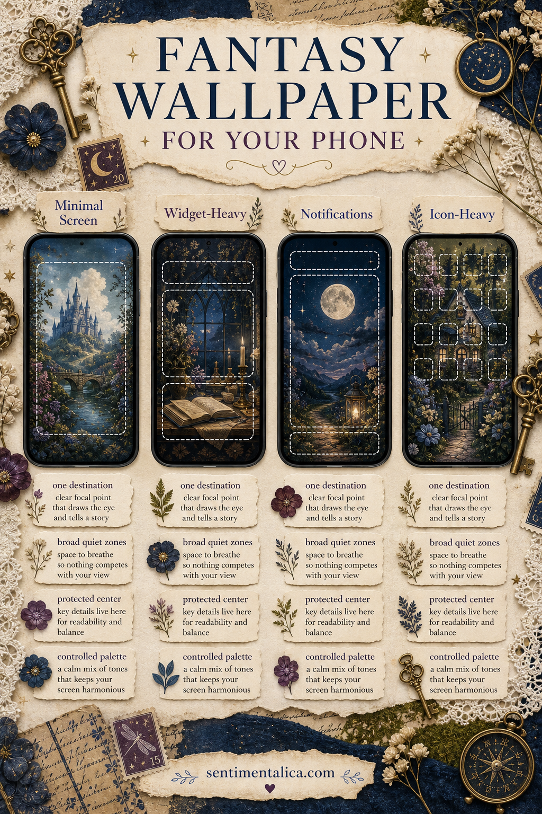
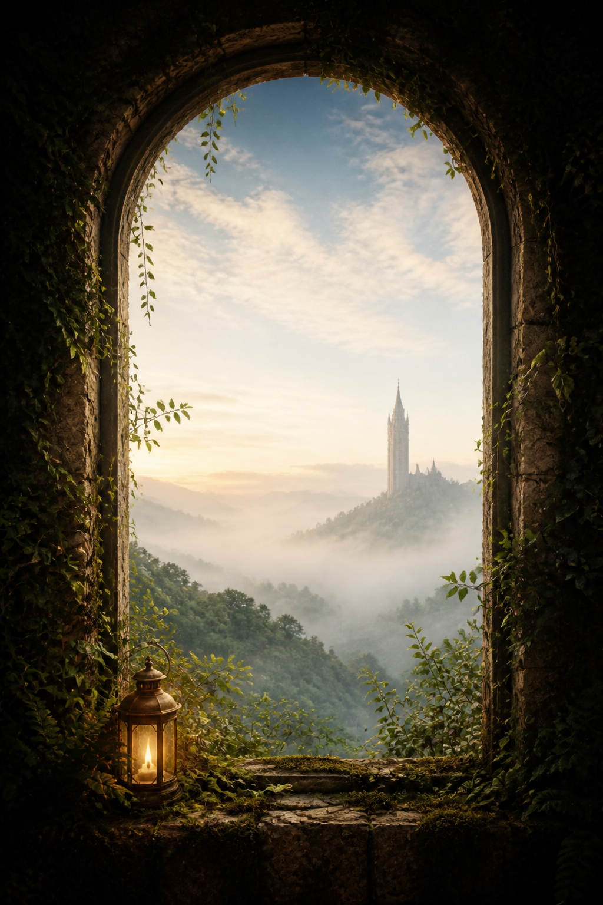

The same fantasy wallpaper can feel magical on one phone and impossible to use on another. A minimal lock screen can carry a detailed castle, while a screen full of widgets may need mist, sky, or dark water behind its controls.
Instead of choosing only by subject, choose by layout. Take a screenshot of your current screen, notice where information lives, and match the artwork to the empty spaces your phone actually needs.

For a minimal lock screen, choose one destination
If your screen shows only the clock and two small controls, you can use more visual detail. Look for one clear destination: a gate, tower, moonlit pond, lantern path, or distant cottage.
Keep the clock area calmer than the focal point. The destination should sit in the middle or lower half so the eye moves past the time and into the imagined world.
For a widget-heavy screen, choose broad quiet zones
Large widgets need steady color and moderate contrast. Mist, parchment sky, dark foliage, water, and softly blurred stone work better than faces, lettering, or tiny magical objects.
Place detail around the edges, then test whether widget text remains readable in both light and dark modes. A beautiful image that needs constant squinting is not serving the screen.

For frequent notifications, protect the center
Notifications often stack across the middle. Choose artwork with atmosphere there rather than a face or essential story detail. A path can pass behind alerts; a tiny fairy portrait cannot.
Move the focal point slightly lower or to one side. When notifications clear, the image will still feel composed instead of strangely empty.
For an icon-heavy home screen, control the palette
App icons already bring many colors and shapes. Choose fantasy art with two or three dominant hues, one dark anchor, and limited sparkle. Moss and cream, midnight blue and brass, or plum and parchment are easier to live with than a rainbow of equal accents.
Blur is not the only solution. Broad painted areas, fog, sky, walls, and water create usable calm while preserving the artwork’s character.
Test the crop in four steps
- Duplicate the image before changing it.
- Set it temporarily and inspect the clock, widgets, notifications, and icons.
- Move the focal point rather than enlarging immediately.
- Check the screen indoors, outside, and in dark mode.
If the crop removes the path, gate, light source, or other reason the scene feels magical, choose a quieter image rather than forcing this one to fit.
The best fantasy wallpaper leaves enough calm for the phone and enough mystery for you.
Choose atmosphere you want to revisit
A lock screen is seen in tiny moments all day. Pick a place that offers a useful pause: light beyond trees, a doorway at dusk, a moon reflected in water. Technical readability matters, but so does the feeling that remains after you have checked the time.
Explore more fantasy composition and wallpaper ideas in the Sentimentalica journal.